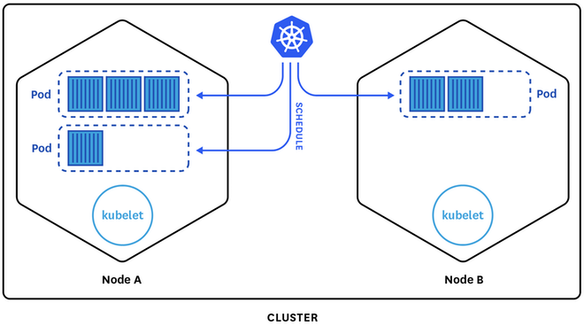

class: center, middle ## Introduction to <img src="img/logo.png"> <br> <h3 class="center">Fernando Ripoll <span style="color: gray;">(CoBrowser.net)</span> & Adrián Moreno <span style="color: gray;">(Dell EMC)</span></h3> <h3 class="center">Tarragona Developers Meetup @ 29th March 2017</h3> --- <img src="img/logo2.png" width="40%;"> ### **Kubernetes** is a system for managing containers across multiple hosts, providing basic mechanisms for deployment, maintenance, and scaling of containers --- # Facts * Means "helmsman" or "pilot" in Greek * a.k.a. `k8s` * Project started by Google in 2014 * Open source, written in Go * Contributors * Google, CoreOS, RedHat, Microsoft, etc. * Very active development * 45k+ commits, 21k+ stars, 7k+ forks (as of Mar 2017) --- ## Not an IaaS, nor a PaaS <img src="img/caas.png"> #### e.g. PaaS on top of Kubernetes * Deis * OpenShift v3 * Gondor --- # Kubernetes does not... * have a service marketplace * dictate application frameworks * restrict the language runtimes (e.g., Java, Python, Ruby) * restrict to only 12-factor apps * distinguish “apps” from “services” * provide middleware (e.g. message buses, databases, caches) --- # Kubernetes does... * Container grouping * Load-balacing * Health checking * Self-healing * Auto-scaling * Naming and discovery * have a extensible design (plugin architecture) * ... --- # Kubernetes architecture --- # master node * Contains the required control plane components * i.e. etcd, API server, scheduler, controller manager * Contains other optional addons * e.g. DNS, User interface, monitoring, logging, etc. * Support for HA multi-master environments --- # master node ### etcd * Distributed key-value store * Used to store the cluster state and configuration data ### kube-apiserver * Serves up the Kubernetes API * Processes operations, validates them, and updates the corresponding objects in etcd --- # master node ### kube-controller-manager * Runs controllers that handle routine tasks in the cluster * Each controller is a separate thread, but run as a single process * e.g. Node Controller, Service Account Controller, Endpoints Controller, etc. --- # master node ### kube-scheduler * Binds unscheduled pods to nodes * Tracks resource utilization * Pluggable by design * Applies predicates (filters) and priorities (sorting) --- # node (aka minion) * Worker machine in Kubernetes * Has the container runtime installed (Docker by default) * Also the `kubelet` and `kube-proxy` services --- # node (aka minion) ### kubelet * Node agent that runs on each node * Receives commands from the k8s control plane * Manages pods and their containers, their images, their volumes, etc ### kube-proxy * Simple network proxy and load balancer * Its configuration is defined by user-defined services * Routes traffic to pods across the cluster --- # Key Concepts --- # pod * Basic deployment unit in Kubernetes * Contains one or more containers * Run inside nodes * Has a single IP address (shared by all containers) * All containers in the pod are deployed to the same host --- # pod #### Example: ```yaml apiVersion: v1 kind: Pod metadata: name: redis-django labels: name: webapp spec: containers: - name: key-value-store image: redis ports: - containerPort: 6379 - name: frontend image: django ports: - containerPort: 8080 ``` --- # pod  --- # label * Key/value pair * Attached to objects (e.g. pods) * Specify identifying attributes of objects that are meaningful and relevant to users * Can be modified at any time ```json "labels": { "app": "webapp", "environment": "dev", "release": "canary", "tier": "frontend", } ``` --- # label --- # selector * Core grouping primitive in Kubernetes * Allows users to identify a set of objects * Allows multiple requirements (comma-separated) * empty label selector -> all objects * null label selector -> no objects #### Equality-based selectors ```yaml environment = production tier != frontend ``` #### Set-based selectors ```yaml environment in (production, qa) tier notin (frontend, backend) !partition ``` --- # Replication Controller / Deployment * Ensures that a specified number of pod "replicas" are running * too many pods -> kill some * too few pods -> start some * Supervises multiple pods across multiple nodes * **Deployments** are the next-gen RC * Rolling upgrades * Rollbacks --- # Replication Controller / Deployment #### Example: ```yaml apiVersion: extensions/v1beta1 kind: Deployment metadata: name: webapp spec: replicas: 3 template: metadata: labels: app: webapp environment: production spec: restartPolicy: always containers: - name: key-value-store image: redis ports: - containerPort: 6379 - name: frontend image: django ports: - containerPort: 8080 ``` --- # service * Set of pods that are defined by the same selector * Traffic to the service is load-balanced to pods by Kubernetes #### Example: ```yaml apiVersion: v1 kind: Service metadata: name: webapp-service spec: selector: app: webapp environment: production type: NodePort ports: - protocol: TCP port: 80 targetPort: 8000 ``` --- # service <img src="img/services-userspace-overview.svg"> --- --- # Networking ### Requirements * Pods need to communicate with each other, no matter which host they run on * Each pod must have a unique IP in the cluster * Containers in a pod must talk using localhost ### Implementations * Contiv, **Flannel**, GCE, L2 networks and linux bridging, OpenVSwitch, Weave, etc... --- ## Flannel * **Overlay network** created by CoreOS * Uses etcd to maintain a mapping between allocated subnets and real host IP addresses * Configured with an IP range and the size of the subnet for each node * e.g. overlay to use 10.100.0.0/16, each node to receive a /24 subnet * Node A 10.100.1.0/24; Host B 10.100.2.0/24; etc. --- # Demo --- # Thank you ## Questions?